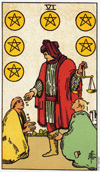

【关键词】 慈善 慷慨 理财 施与受
两个乞丐跪伏在商人模样的男子面前，在乞讨。男子右手在施舍，左手提着一柄象征平衡的天平。画面再辛酸中透出幽默，施舍需要讲究公平。该给哪位多少，给太多，给太少，都不是恰当的援助。星币六除了慈善以外，也代表一种理财能力。
推测：星币六经常代表你将要得到需要的东西。如朋友久欠不还的债款，一件意义非凡的赠礼，甚至是遗产。当然，有时也代表着你将要捐献，馈赠，为别人付出。
星币六是在形容一种结构性的关系，其中一人比另一人更有控制力。
星币六是一张有很多层面的牌，而它的意义又会随着问题或周遭的牌而改变，在这张牌中，我们看到一个富翁把他的钱分给两个乞丐。这看似公平和正当，不过，请注意，两个乞丐是跪在富翁的面前。在这个关系里，他是处于有权立的地位。6是在形容一种关系：一个人支配另外一个人。
在事业或工作的情况中，星币六表示为了换取一份酬劳，你同意付出时间及努力。这是一项公平的安排。富翁手上的天平处于平衡状态，暗示双方都会对此安排感到满意。或许是一个人想要支配别人，而另外一个人则愿意顺从。稳定而舒适使这项安排显得稳定。例如，在职场上，员工对于一个方案的成败并不富有最终的责任，而资方也不必逐日的盯着他们的方案执行进度。在一个尽可能朝互利局面的管理中，每个人都有他们自己的角色要扮演。
大体上的意义
星币六意味你正要换工作、得到一份新工作、聘用技术人员或其他员工，或因某件大事而花钱，例如买一栋房子或一部车。在有关生意投资的问题上，它可能象征借钱来开创事业。
星币六可能表示某种稳定的财务状态，并暗示你很乐意继续目前的方向。当这张牌出现在牌面上，就表示财务状态稳定。
正位含义：
1.懂得礼尚往来，人际关系圆通。
2.与人为善，人缘极好。
3.生活状况良好。
4.胸怀宽广，坦荡。
逆位含义：
1.自私自利，令人生厌。
2.忌妒心很强，心情时常处在恶劣状态。
3.拥有很多不干净的钱。
4.负债。或者在情义上欠别人的，不知报答。
5.贪欲很重，为其操纵。
两性关系上的意义
星币六形容一种两性关系：一个人支配着另一个。这可能是以一种相当微妙的方式在进行。例如伴侣中的一个可能说：“亲爱的，现在别太兴奋了，别忘了你的心脏不好。”虽然着听起来象是对其伴侣一种责任上的关心，但也可能是一种控制对方的方式。可以确定的时，他的伴侣无法尽情享受，或是不能做控制的一方没有准备的事情。
这张牌正立时暗示你支配你的伴侣，而倒立时，情形刚好相反。它可以表示，你只付出你不会失去的东西，或是即使你有很多，你也只会给一点点。接收你付出的人有可能只能接受这些，无法接受更多的东西。它再度暗示一种令人愉悦的安排。
在某段关系当中，不论你是支配者或是被支配者，当其中一人有较大的权力时，就不太可能会有真正的亲密了。
倒立的星币六
星币六倒立时，象征一种稳定的状态已经结束，或是被破坏。或许你已经辞职或被裁掉了。可能某段两性关系已经结束了，这可能是因为你(或伴侣)已经打破了你在这段关系立的角色。
星币六的倒立也意味着花掉了很多钱，或是财务状况失控。你目前的生活可能入不敷出。
在两性关系的分析中，它意味你的伴侣对于这段关系有高于你的控制权。究竟深层面而言，它可能表示在肉体、情感或精神上都得到不到满足。